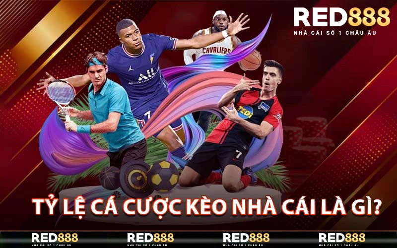
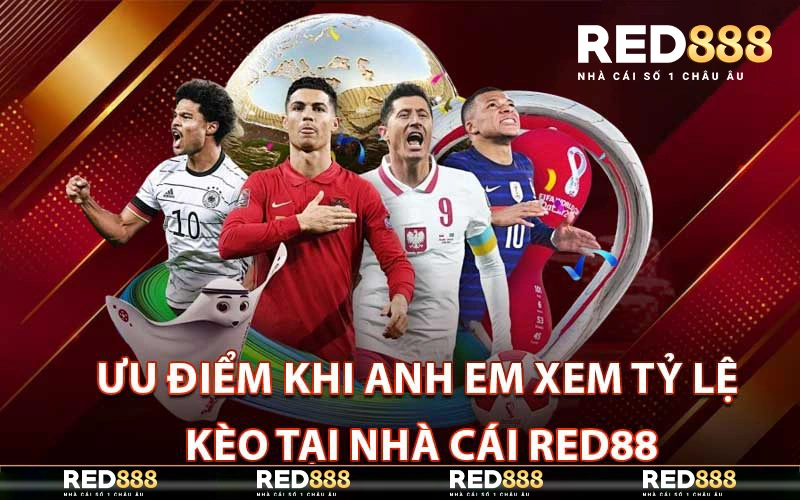
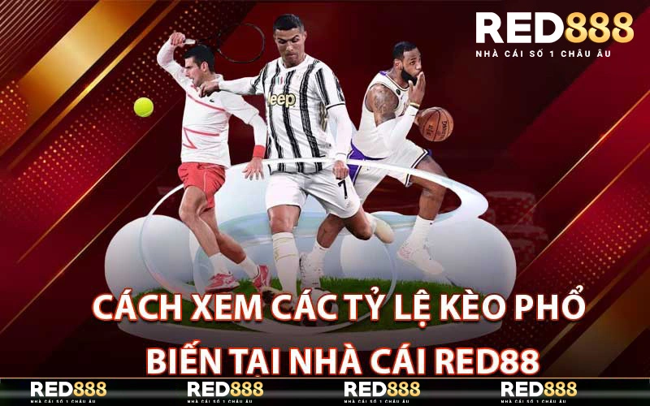

Tỷ Lệ Kèo Nhà Cái – Mang Đến Sự Giàu Sang Cho Anh Em Đam Mê Cá Cược
ĐÃ ĐĂNG TRÊN 15/05/2024 BỞI RED888.LIFE
Tỷ lệ kèo nhà cái là một yếu tố quan trọng ảnh hưởng đến kết quả thắng thua của người chơi khi tham gia đặt cược. Hiểu được nhu cầu này, nhà cái đã tạo ra một chuyên mục đặc biệt để giúp bạn theo dõi tỷ lệ cá cược một cách nhanh chóng và thuận tiện. Hãy cùng Red888 khám phá chi tiết về chuyên mục này và tìm hiểu cách nó có thể hỗ trợ bạn trong quá trình cá cược ngay dưới đây nhé.
Tỷ lệ cá cược kèo nhà cái là gì?
Tỷ lệ cá cược kèo nhà cái là gì?
Tỷ lệ cá cược kèo nhà cái là tỉ lệ so sánh giữa số tiền đặt cược và số tiền thắng trong một trận đấu. Đây là con số quan trọng nhất mà người chơi cần biết khi tham gia cá cược thể thao tại các nhà cái. Số tiền đặt cược sẽ được tính dựa trên tỷ lệ kèo và nếu đội/chủ nhà chiến thắng, người chơi sẽ nhận được số tiền thắng tương ứng với tỷ lệ này.
Ví dụ: Nếu tỷ lệ kèo của một trận đấu là 1.5 và người chơi đặt cược 100.000 VNĐ cho đội bóng chiến thắng, nếu đội bóng thắng, người chơi sẽ nhận được 150.000 VNĐ (100.000 x 1.5).
Tỷ lệ kèo có thể khác nhau tùy thuộc vào từng nhà cái và từng trận đấu. Điều này phụ thuộc vào nhiều yếu tố như tỷ lệ thắng/thua của đội bóng, tình hình lực lượng, điều kiện sân bãi và cả yếu tố may mắn.
Ưu điểm khi anh em xem tỷ lệ kèo tại nhà cái Red888
Ưu điểm khi anh em xem tỷ lệ kèo tại nhà cái Red888
Nhà cái Red888 là một trong những nhà cái hàng đầu hiện nay tại Việt Nam. Với giao diện đơn giản và dễ sử dụng cùng với các tính năng đặc biệt, Red888 đã thu hút được rất nhiều người chơi tham gia cá cược thể thao. Và khi xem tỷ lệ kèo tại Red888, anh em sẽ có nhiều ưu điểm sau:
Cập nhật liên tục
Một trong những ưu điểm lớn của Red888 là việc tỷ lệ kèo được cập nhật liên tục và chính xác. Điều này giúp người chơi có thể dễ dàng theo dõi và quyết định đặt cược vào đội bóng nào.
Các loại kèo phong phú
Red888 cung cấp đa dạng các loại kèo cho người chơi lựa chọn. Không chỉ có kèo Châu Âu, Châu Á hay Tài Xỉu, đội ngũ phân tích của nhà cái còn đưa ra nhiều loại kèo như kèo chẵn/lẻ, kèo hiệp 1/hiệp 2, kèo góc cạnh, kèo phạt góc, kèo thẻ phạt,…
Khuyến mãi hấp dẫn
Với mục tiêu hỗ trợ người chơi, Red888 luôn cập nhật các chương trình khuyến mãi cho người chơi. Điều này giúp anh em có thêm cơ hội chiến thắng và tăng kinh nghiệm khi tham gia cá cược.
Cách xem các tỷ lệ kèo phổ biến tại nhà cái red888
Cách xem các tỷ lệ kèo phổ biến tại nhà cái red888
Như đã đề cập ở trên, Red888 cung cấp đa dạng các loại kèo cho người chơi lựa chọn. Sau đây là một số tỷ lệ kèo phổ biến mà anh em có thể xem tại nhà cái này:
Tỷ lệ kèo Châu Âu
Tỷ lệ kèo Châu Âu được sử dụng rộng rãi trong bóng đá và thường là loại kèo đầu tiên mà người chơi nghĩ đến. Đây là loại kèo đơn giản nhất và thường có hai cửa: đội chủ nhà hoặc đội khách thắng. Tuy nhiên, để thuận lợi cho người chơi, Red888 còn cung cấp các loại kèo hấp dẫn khác như kèo chẵn/lẻ, kèo thắng không bàn thắng,…
Tỷ lệ kèo Châu Á
Kèo Châu Á được xem là “tứ linh” trong thế giới cá cược. Đây là loại kèo khá phổ biến và có nhiều dạng khác nhau như kèo Châu Á trên/dưới, kèo Châu Á chấp, kèo Châu Á chẵn/lẻ,… Với các tỷ lệ kèo này, người chơi có thể tối ưu hóa cơ hội chiến thắng của mình.
Tỷ lệ kèo Tài Xỉu
Loại kèo Tài Xỉu cũng thu hút được rất nhiều người chơi bởi tính đa dạng và cơ hội chiến thắng cao. Người chơi sẽ đặt cược vào số bàn thắng được ghi trong một trận đấu và nếu con số thuộc khoảng mà người chơi đã chọn, anh em sẽ chiến thắng. Red888 cung cấp nhiều loại kèo Tài Xỉu để người chơi có thể lựa chọn theo sở thích cá nhân.
Điều cần lưu ý khi xem tỷ lệ cá cược kèo nhà cái
Hiểu rõ về tỷ lệ kèo là rất quan trọng khi tham gia cá cược thể thao tại các nhà cái. Tuy nhiên, để đạt được thành công, anh em cần lưu ý những điều sau:
Tìm hiểu về đội bóng
Trước khi đặt cược, hãy tìm hiểu kỹ về đội bóng mà bạn muốn chọn. Xem xét các thông tin như lực lượng, phong độ gần đây và các trận đấu gần đây của đội để có cái nhìn tổng quan về đội bóng.
Không nên theo đám đông
Đôi khi, người chơi sẽ dễ bị ảnh hưởng bởi dư luận và đưa ra quyết định sai lầm khi thấy nhiều người đặt cược vào một đội bóng. Hãy tự tin vào khả năng phân tích của mình và không nên theo đám đông nếu không có đủ căn cứ.
Quản lý tài chính
Việc quản lý tài chính là điều quan trọng để duy trì cuộc chơi lâu dài. Hãy đặt ra một khoản tiền nhất định cho việc cá cược và tuân thủ nguyên tắc này. Đồng thời, hãy chia tỷ lệ cược sao cho có thể giữ lại một phần tiền thắng nếu vận may không mỉm cười.
Kết Luận
Tỷ lệ cá cược kèo nhà cái là yếu tố quan trọng khi tham gia cá cược thể thao. Nắm vững thông tin về tỷ lệ kèo sẽ giúp người chơi có thể đưa ra quyết định đúng đắn và tăng cơ hội chiến thắng. Với những lợi ích mà nó mang lại, anh em đam mê cá cược thể thao nên dành thời gian để tìm hiểu và áp dụng vào cuộc chơi của mình. Hãy luôn cẩn trọng và tự tin trong việc đặt cược để mang đến sự giàu sang cho bản thân.
BÀI VIẾT MỚI